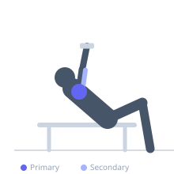
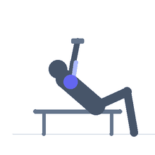

Exercise guide / Seated Arnold Press on Incline Bench
Seated Arnold Press on Incline Bench
The incline-bench Arnold press performs the standard Arnold press rotation from supinated-to-pronated while seated on an incline bench (60-70 degrees), which provides a slight forward lean and greater back support than a vertical seated position. The incline alters the starting angle of the press, increasing anterior deltoid pre-stretch at the bottom and making the transition from the supinated starting position slightly more challenging through the mid-range.
Primary muscles
deltoid anterior
deltoid lateral
Secondary muscles
triceps brachii
deltoid posterior
Stabilizers
erector spinae
Equipment
Standard Barbell
Dumbbell (Fixed)


Starting position
- Sit on a bench inclined to 60-70 degrees. Hold dumbbells in the Arnold press starting position — elbows bent, dumbbells at shoulder level, palms facing the body.
Setup
- Set the bench high enough to be nearly vertical but not fully upright — this differentiates from a standard seated Arnold press.
Steps
- Step 1: Begin with dumbbells at shoulder height, palms facing you, elbows forward.
- Step 2: Begin pressing while simultaneously rotating the wrists outward.
- Step 3: By the mid-point of the press, palms face forward (pronated).
- Step 4: Continue pressing to full overhead extension.
- Step 5: Lower while reversing the rotation — returning to the supinated position.
Coaching cues
- Elbows go from forward to out as you press
- Full rotation — 180 degrees of wrist turn
- Drive the weight overhead — not just forward
Breathing
- Exhale on the press. Inhale on the descent.
Range of motion
- Shoulder height supinated to full overhead extension pronated.
Tempo
- 2-0-2-0
Common mistakes
- Not completing the full rotation — the supination-to-pronation should be a full 180 degrees
- Using too heavy a load — the rotation requires control
Safety
- The rotation combined with heavy loads increases wrist stress — moderate weight
- Ensure the bench incline is stable and secure before loading
Training
- hypertrophy: 8–12 reps
- hypertrophy: 3–4 sets
- Rest: {'hypertrophy': 90}